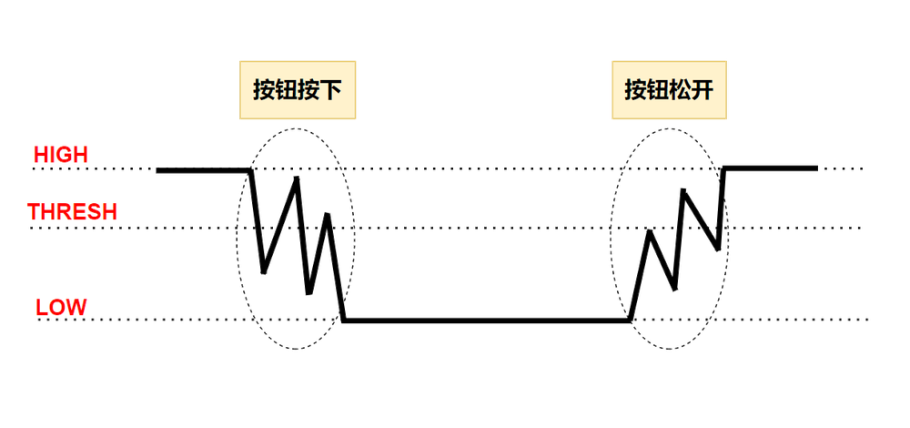
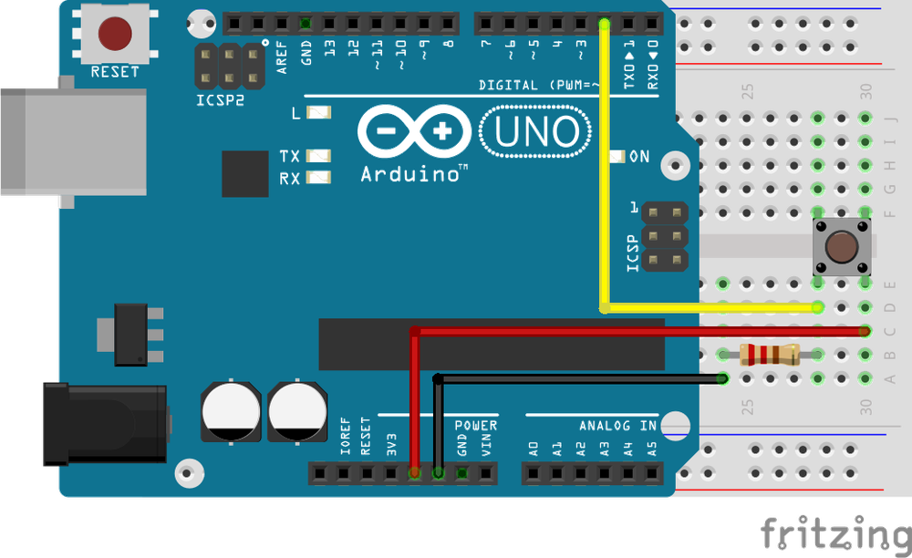

第三章——使用按钮
1. 按钮
按钮是一种非常常用的交互元器件，学会使用按钮很有必要。
下面是一个按钮接线图和使用按钮的一个程序，大家可以先看一下。

int button = 2;
int led = 13;
void setup() {
pinMode(button, INPUT);
pinMode(led, OUTPUT);
}
void loop() {
bool buttonStatus = digitalRead(button);
if (buttonStatus == HIGH) {
digitalWrite(led, HIGH);
}
else {
digitalWrite(led, LOW);
}
}
在这个程序中，我们使用了一个板载 LED 和一个按钮。可以观察到，当我们按下按钮时，LED 会被点亮，松开后就会熄灭。
在这里我们使用了pinMode()mode 参数的第二个可选值INPUT，即输入模式。
2. digitalRead()函数
语法：
digitalRead(pin);
该函数用来读取某个引脚的引脚状态。
参数 pin：Arduino 的引脚号。
在 5V 的单片机中，如果输入电压高于 3V则认为输入的是高电平，返回 1，否则认为是低电平，返回 0。
所以在 loop 循环中，我们通过bool buttonStatus = digitalRead(button)来读取按钮的状态。当按钮按下时，5V 的电压会通过按钮输入到 2 号引脚，单片机读取引脚状态，存储到buttonStatus中。如果是高电平，就点亮板载 LED，低电平就熄灭 LED。

3. 按钮进阶
加入我们需要按一下按钮，灯点亮，再按一下按钮，灯熄灭，这样我们应该如何编写呢。
其实最简单的方法就是在函数末尾增加一个延时，同时对代码进行稍加修改：
int button = 2;
int led = 13;
bool ledStatus = false;
void setup() {
pinMode(button, INPUT);
pinMode(led, OUTPUT);
}
void loop() {
bool buttonStatus = digitalRead(button);
if (buttonStatus) {
ledStatus = !ledStatus;
digitalWrite(led, ledStatus);
}
delay(200);
}
大家上传代码后可以试一下是不是可以初步达到目的。
可能有人会发现，有时候按钮按下去，灯没有反应，这是为什么？
那是由于 delay 这样的延时只是保证了每次运行之间多出 200ms 的延时，在这期间，单片机不能做任何事情，当然肯能会漏掉一次检测按钮的可能。
关键问题就是如何让这 200ms 期间，程序不被 block，能够不断检测按钮状态。
下面是一个很好的方法，大家可以参考一下：
int button = 2;
int led = 13;
bool ledStatus = false;
unsigned long lastTime;
void setup() {
pinMode(button, INPUT);
pinMode(led, OUTPUT);
}
void loop() {
bool buttonStatus = digitalRead(button);
// 按钮检测到被按下，且上一次按下和这次间隔超过200ms
if (buttonStatus && millis() - lastTime > 200) {
ledStatus = !ledStatus;
digitalWrite(led, ledStatus);
// 记录这次按下的时间
lastTime = millis();
}
}
在这里我们通过对比两次按钮按下的时间间隔，如果两次间隔超过 200ms 就认为这是两次不同按键动作，否则我们就忽略认为是一次动作，不进行操作。
大家可以发现，这个程序运行起来明显准确得多，每一次按钮按下都能检测到。
在这个程序中，我们使用了一个新的函数millis()，这也是 Arduino 内置的函数。
语法：
time = millis();
millis()记录了自程序启动后经过的时间，单位是 ms，返回的数据类型也是unsigned long。这个函数最多可以记录50 天的值，之后就会溢出变为 0。
Arduino 同时还有另一个记录时间的函数micros()，它的单位是 us，返回的数据类型同样也是unsigned long。大约70 分钟后，此数字将溢出变为 0。
在 Arduino Portenta 系列的开发板上，此功能在所有内核上的分辨率为1 微秒。在 16MHz 的 Arduino 开发板（如 Uno 和 Nano 上，此函数的分辨率为4 微秒，即返回的值始终是 4 的倍数）。在 8MHz 的 Arduino 开发板（例如 LilyPad）上，此函数的分辨率为8 微秒。
5. 按钮硬件消抖
其实按钮在按下和松开的过程中，按钮中的两个金属片并不是直接接触和松开的，在这过程中其实着抖动，也就是按钮在 0 和 1 之间抖动。
下面是按钮抖动的示意图：

那我们如何解决这个问题呢，比较常用的方法就是加入上拉电阻或者下拉电阻帮助消抖。也就是让按钮在没有被完全按下的时候保持高电平或者低电平。
下面是我们的按钮加入下拉电阻的接线图：

原理图如下：

由于下拉电阻的存在，当按钮还在波动的期间，IO 口都会被下拉电阻拉低，直到完全按下时，下拉电阻被短路，IO 口输入高电平。
同理有上拉电阻：

在大部分应用中，上拉电阻的使用更多一些。同时，现在的单片机大多都有内部上拉电阻，有的也有内部下拉电阻，这就是pinMode()mode 参数的第三个可选值INPUT_PULLUP。
因此上面的代码可以改成如下代码，同时使用软件和硬件消抖：
int button = 2;
int led = 13;
bool ledStatus = false;
unsigned long lastTime;
void setup() {
// 上拉电阻——硬件消抖
pinMode(button, INPUT_PULLUP);
pinMode(led, OUTPUT);
}
void loop() {
bool buttonStatus = digitalRead(button);
// 软件消抖——按钮检测到被按下，且上一次按下和这次间隔超过200ms
if (buttonStatus && millis() - lastTime > 200) {
ledStatus = !ledStatus;
digitalWrite(led, ledStatus);
// 记录这次按下的时间
lastTime = millis();
}
}